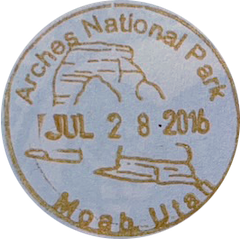

Visual Thinking Analysis
Oct 30, 2023
This image is primarily interesting due to its visual aesthetic. The feeling that it expresses is quite calming and sets a coffee shop kind of scene. In addition, looking at the image alone, wnat's also interesting is that it's not clear that the picture was taken in France and near the dock at that. Though it was taken in front of a shop, it was a gelato shop, a more common form of desert. The experience behind the trip most would not be typically seen just looking at the image. The streets were narrow and the shops were small and compact. This image relates to the topic of my archive of photos as it is of my trip around a part of Europe. My archive of photos tells of the places I’ve visited and the memories that I’ve made there. Secondly, it tells of my design intentions when taking those photos.
The image is of what I believe to be a stamp from the Arches National park on July 28, 2016. I believe it is what Beverly had gotten as a souvenir from her trip there. The most interesting aspect of this image is the shape of the image and that it’s cropped . It first made me think it was a coin, but as I look at it longer, I can tell that it’s very probable that it's a stamp. The color and lack of shine added to that assumption. Within this image, it tells me that she found this trip to be very memorable, that she likes to visit parks, and is outgoing. I also assume that her collection is of stamps that she has collected during her trips to these parks.